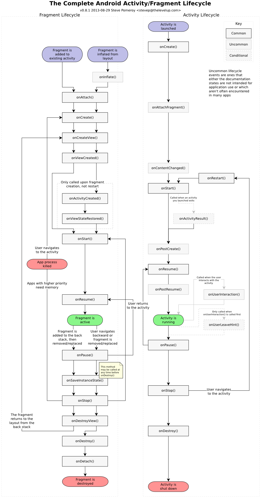

Fragment专题
简介
A Fragment is a piece of an application's user interface or behavior that can be placed in an Activity. Interaction with fragments is done through FragmentManager, which can be obtained via Activity.getFragmentManager() and Fragment.getFragmentManager().
The Fragment class can be used many ways to achieve a wide variety of results. In its core, it represents a particular operation or interface that is running within a larger Activity. A Fragment is closely tied to the Activity it is in, and can not be used apart from one. Though Fragment defines its own lifecycle, that lifecycle is dependent on its activity: if the activity is stopped, no fragments inside of it can be started; when the activity is destroyed, all fragments will be destroyed.
All subclasses of Fragment must include a public no-argument constructor. The framework will often re-instantiate a fragment class when needed, in particular during state restore, and needs to be able to find this constructor to instantiate it. If the no-argument constructor is not available, a runtime exception will occur in some cases during state restore.
生命周期
onAttach()(Fragment被绑定到Activity时调用) ---> onCreate()(Fragment创建) -->
onCreateView()(创建和Fragment关联的View Hierarchy时调用) --> onActivityCreated()(Activity的onCreate()方法返回时调用)
--> onStart() --> onResume() --> onPause() --> onStop() --> onDestroyView()当和Fragment关联的view hierarchy正在被移除时调用.
--> onDestroy()(Activity的onDestroy执行后的回调), --> onDetach()(当Fragment从Activity解除关联时被调用)

使用
布局添加
<LinearLayout xmlns:android="http://schemas.android.com/apk/res/android" android:orientation="horizontal" android:layout_width="fill_parent" android:layout_height="fill_parent"> <fragment android:name="com.example.android.fragments.HeadlinesFragment" android:id="@+id/headlines_fragment" android:layout_weight="1" android:layout_width="0dp" android:layout_height="match_parent" /> <fragment android:name="com.example.android.fragments.ArticleFragment" android:id="@+id/article_fragment" android:layout_weight="2" android:layout_width="0dp" android:layout_height="match_parent" /> </LinearLayout> import android.support.v4.app.FragmentActivity; public class MainActivity extends FragmentActivity { @Override protected void onCreate(Bundle savedInstanceState) { super.onCreate(savedInstanceState); setContentView(R.layout.fragment_layout); } }每一个fragment 都需要一个唯一的标识,如果activity重启,系统可以用来恢复fragment(并且你也可以用来捕获fragment 来处理事务,例如移除它.)
有3 种方法来为一个fragment提供一个标识:1. 为`android:id`属性提供一个唯一ID. 2. 为`android:tag`属性提供一个唯一字符串. 3. 如果以上2个你都没有提供,系统使用容器`view`的`ID`.public static ArticleFragment newInstance(int index) { ArticleFragment f = new ArticleFragment(); // Supply index input as an argument. Bundle args = new Bundle(); args.putInt("index", index); f.setArguments(args); return f; }通过代码添加 只需简单的指定一个需要放置
Fragment的ViewGroup.为了在Activity中操作Fragment事务(例如添加、移除或代替),必须使用来自FragmentTransaction.public class MainActivity extends FragmentActivity { @Override protected void onCreate(Bundle savedInstanceState) { super.onCreate(savedInstanceState); setContentView(R.layout.fragment_layout); // Check that the activity is using the layout version with // the fragment_container FrameLayout if (findViewById(R.id.fragment_container) != null) { // However, if we're being restored from a previous state, // then we don't need to do anything and should return or else // we could end up with overlapping fragments. if (savedInstanceState != null) { return; } // Create a new Fragment to be placed in the activity layout HeadlinesFragment firstFragment = new HeadlinesFragment(); // In case this activity was started with special instructions from an // Intent, pass the Intent's extras to the fragment as arguments firstFragment.setArguments(getIntent().getExtras()); // Add the fragment to the 'fragment_container' FrameLayout getSupportFragmentManager().beginTransaction() .add(R.id.fragment_container, firstFragment).commit(); } } }
管理Fragment
要在activity中管理fragment,需要使用FragmentManager. 通过调用activity的getFragmentManager()取得它的实例.
可以通过FragmentManager做一些事情, 包括:
1. 使用findFragmentById() (用于在activitylayout 中提供一个UI 的fragment)或findFragmentByTag()(适用于有或没有UI 的fragment)获取activity 中存在的fragment
2. 将fragment 从后台堆栈中弹出, 使用popBackStack() (模拟用户按下BACK 命令).
3. 使用addOnBackStackChangeListener()注册一个监听后台堆栈变化的listener.
处理Fragment事务
每一个事务都是同时要执行的一套变化.可以在一个给定的事务中设置你想执行的所有变化,使用诸如add(), remove(),和replace().
要给activity应用事务, 必须调用commit().在调用commit()之前,
你可能想调用addToBackStack(),将事务添加到一个fragment 事务的backstack
将一个fragment 替换为另一个, 并在后台堆栈中保留之前的状态:
// Create new fragment and transaction
Fragment newFragment = new ExampleFragment();
FragmentTransaction transaction = getFragmentManager().beginTransaction();
// Replace whatever is in the fragment_container view with this fragment,
// and add the transaction to the back stack
transaction.replace(R.id.fragment_container, newFragment);
transaction.addToBackStack(null);
// Commit the transaction
transaction.commit();
Fragment通过调用addToBackStack(), replace事务被保存到back stack,因此用户可以回退事务,并通过按下BACK按键带回前一个Fragment.
Fragment真正的onPause以及onResume
Fragment虽然有onResume()和onPause()方法，但是这两个方法是Activity的方法调用时机也与Activity相同，
和ViewPager搭配使用这个方法就很鸡肋了，根本不是你想要的效果，这里介绍一种方法。
@Override
public void setUserVisibleHint(boolean isVisibleToUser) {
super.setUserVisibleHint(isVisibleToUser);
if (isVisibleToUser) {
//相当于Fragment的onResume
} else {
//相当于Fragment的onPause
}
}
通过阅读ViewPager和PageAdapter相关的代码，切换Fragment实际上就是通过设置setUserVisibleHint和setMenuVisibility来实现的，
调用这个方法时并不会释放掉Fragment（即不会执行onDestoryView）。
Fragment与ViewPager搭配
FragmentStatePagerAdapter，会自动保存和恢复Fragment。
import android.support.v4.app.Fragment;
import android.support.v4.app.FragmentManager;
...
public class ScreenSlidePagerActivity extends FragmentActivity {
/**
* The number of pages (wizard steps) to show in this demo.
*/
private static final int NUM_PAGES = 5;
/**
* The pager widget, which handles animation and allows swiping horizontally to access previous
* and next wizard steps.
*/
private ViewPager mPager;
/**
* The pager adapter, which provides the pages to the view pager widget.
*/
private PagerAdapter mPagerAdapter;
@Override
protected void onCreate(Bundle savedInstanceState) {
super.onCreate(savedInstanceState);
setContentView(R.layout.activity_screen_slide);
// Instantiate a ViewPager and a PagerAdapter.
mPager = (ViewPager) findViewById(R.id.pager);
mPagerAdapter = new ScreenSlidePagerAdapter(getSupportFragmentManager());
mPager.setAdapter(mPagerAdapter);
}
@Override
public void onBackPressed() {
if (mPager.getCurrentItem() == 0) {
// If the user is currently looking at the first step, allow the system to handle the
// Back button. This calls finish() on this activity and pops the back stack.
super.onBackPressed();
} else {
// Otherwise, select the previous step.
mPager.setCurrentItem(mPager.getCurrentItem() - 1);
}
}
/**
* A simple pager adapter that represents 5 ScreenSlidePageFragment objects, in
* sequence.
*/
private class ScreenSlidePagerAdapter extends FragmentStatePagerAdapter {
public ScreenSlidePagerAdapter(FragmentManager fm) {
super(fm);
}
@Override
public Fragment getItem(int position) {
return new ScreenSlidePageFragment();
}
@Override
public int getCount() {
return NUM_PAGES;
}
}
}
如何给ViewPager切换时增加动画.
ViewPager mPager = (ViewPager) findViewById(R.id.pager);
mPager.setPageTransformer(true, new DepthPageTransformer ());
public class DepthPageTransformer implements ViewPager.PageTransformer {
private static final float MIN_SCALE = 0.75f;
public void transformPage(View view, float position) {
int pageWidth = view.getWidth();
if (position < -1) { // [-Infinity,-1)
// This page is way off-screen to the left.
view.setAlpha(0);
} else if (position <= 0) { // [-1,0]
// Use the default slide transition when moving to the left page
view.setAlpha(1);
view.setTranslationX(0);
view.setScaleX(1);
view.setScaleY(1);
} else if (position <= 1) { // (0,1]
// Fade the page out.
view.setAlpha(1 - position);
// Counteract the default slide transition
view.setTranslationX(pageWidth * -position);
// Scale the page down (between MIN_SCALE and 1)
float scaleFactor = MIN_SCALE
+ (1 - MIN_SCALE) * (1 - Math.abs(position));
view.setScaleX(scaleFactor);
view.setScaleY(scaleFactor);
} else { // (1,+Infinity]
// This page is way off-screen to the right.
view.setAlpha(0);
}
}
}